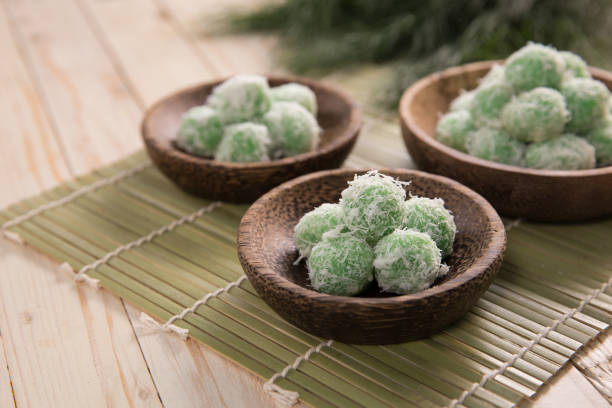

Klepon

Klik disini untuk melihat cara pembuatannya.
Klepon adalah sejenis makanan tradisional atau kue tradisional Indonesia yang termasuk ke dalam kelompok jajanan pasar. Makanan enak ini terbuat dari tepung beras ketan yang dibentuk seperti bola-bola kecil dan diisi dengan gula merah lalu direbus dalam air mendidih. Klepon yang sudah masak lalu digelindingkan di atas parutan kelapa agar melekat, sehingga klepon tampak berbalur parutan kelapa. Biasanya klepon diletakkan di dalam wadah yang terbuat dari daun pisang.
Bahan-bahan:
100 gr Kelapa Parut
1/4 sdt Garam
250 gr Tepung Ketan
50 gr Tapioka/Maizena
3/4 sdt Garam
3 sdm Air Kapur Sirih
150 ml Air Hangat
Pewarna hijau
Gula Merah diiris
Langkah:
- Kukus kelapa parut yang sudah diberi garam selama kurang lebih 5 menit. Sisihkan.
- Campur semua bahan kering. Lalu masukkan air kapur sirih dan air hangat yang sudah diberi pewarna sedikit demi sedikit, sambil diuleni. Sampai tekstur adonan mudah dibentuk. (Tidak terlalu encer dan tidak terlalu keras).
*Stop pemberian air kalo adonan sudah pas. Jangan dipaksa dihabisin airnya. Begitu juga sebaliknya kalo adonan masih keras, tambahin lagi aja air hangat sedikit demi sedikit agar tidak terlalu encer.
- Rebus air di panci.
Timbang adonan sesuai selera (me : 10gr). Lalu pipihkan adonan dan letakkan gula merah. Tutup kembali adonan dan bulatkan.
- Jika air rebusan sudah mendidih, masukkan adonan yang sudah diberi isian dan dibulatkan tadi. Ketika klepon mengapung, jangan langsung diangkat. Diamkan dulu sebentar agar gula merah di dalamnya mencair.
- Lalu angkat klepon dan tiriskan. Lalu letakkan di kelapa parut dan baluri.
- Klepon siap untuk disajikan.
Diterbitkan oleh Acha